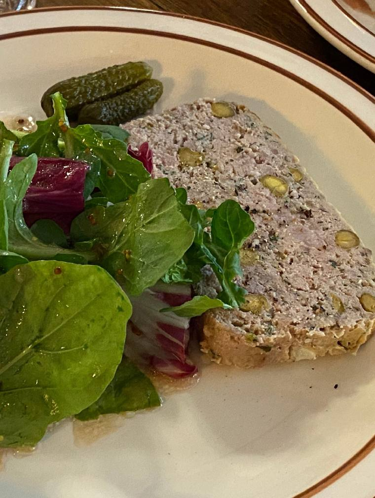

Pâtés en bocaux

Pâtés en bocaux
Pâté breton
Préparation : 45 min
Cuisson : 2 h
Ingrédients (pour 1 kg de mêlée environ)
- 400 g de gorge de porc découennée
- 250 g de foie de porc
- 120 g d’épaule de porc
- 80 g de couenne cuite
- 100 g d’oignons frais
- 32 g de bouillon
- 16 g de sel fin
- 2 g de poivre
Quantités adaptées. Les temps de cuisson ne sont pas recalculés.
- Cuire la couenne à l’eau jusqu’à ce qu’elle soit tendre, la refroidir.
- Hacher gorge, épaule et foie à 8 mm. Hacher fin couenne et oignons crus.
- Ajouter bouillon, sel et poivre, mélanger jusqu’à ce que la mêlée colle.
- Remplir des bocaux de 350 ml au plus jusqu’à 2 cm du bord, sans air, fermer avec un joint neuf, plus un bocal témoin.
- Immerger et tenir 2 heures à 100 °C au stérilisateur. Ouvrir le témoin : au moins 78 °C au centre, sinon prolonger.
- Laisser tiédir 30 minutes, refroidir à l’eau tiède puis froide, et mettre aussitôt au réfrigérateur.
À conserver au froid, jamais au placard
Au réfrigérateur entre 0 et 4 °C : 5 jours au plus. Au congélateur à −18 °C, dès le refroidissement : 2 mois au plus.
Les règles des bocaux
D’après le cahier des charges IGP Pâté de campagne breton, INAO. Proportions composées dans les limites du cahier des charges. Cuisson CEPROC, conservation au froid.